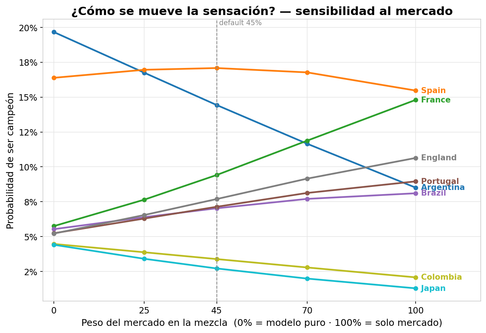
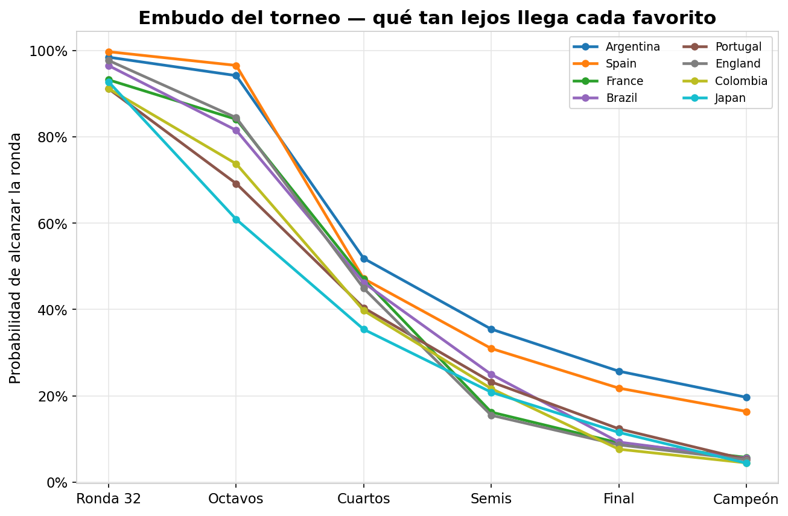
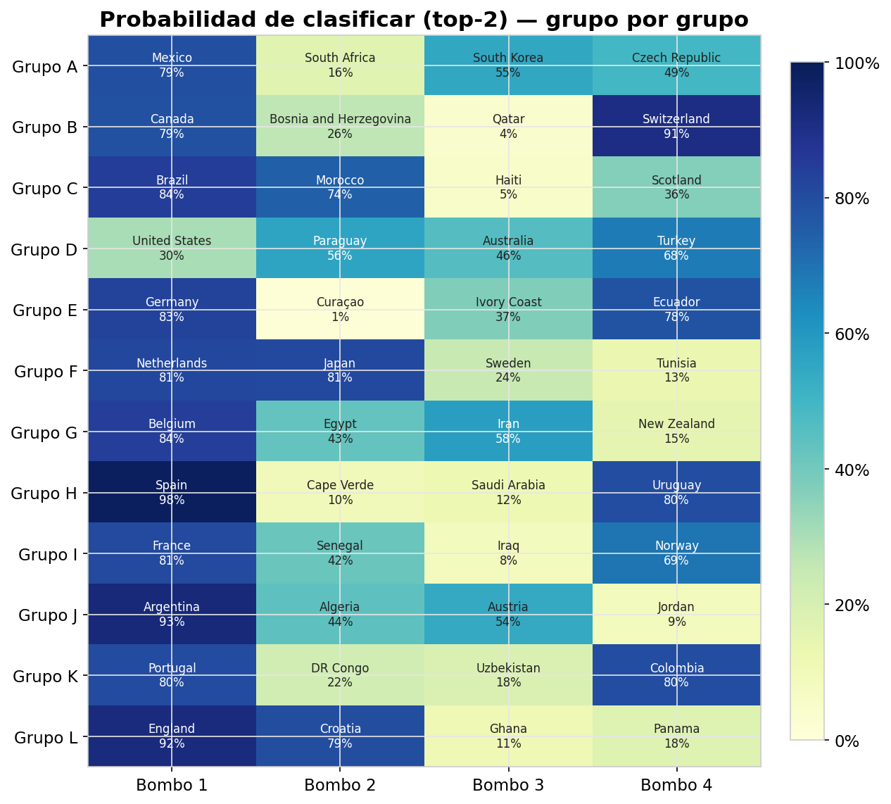

El modelo dice Argentina.
El mercado dice España.
Predicción probabilística del Mundial 2026 construida con un ensemble de Elo de selecciones, un modelo de goles Dixon-Coles y la señal de mercado, resuelta con una simulación Monte Carlo de 50.000 torneos sobre el formato real de 48 equipos. No busca acertar: busca estar bien calibrada.
Cómo se mueve la sensación
El gráfico principal muestra la probabilidad de campeón de cada equipo según cuánto peso le des al mercado. Argentina se desploma, Francia e Inglaterra suben, España se mantiene clavada — el punto de consenso entre el modelo y las casas.



Los doce con más opción
Probabilidad de levantar el trofeo según el modelo puro y según la mezcla con el mercado.
Tres señales, un torneo simulado
Cada pieza es independiente y medible. La calibración por backtest es la credencial: convierte una opinión en una probabilidad evaluable.
Elo de selecciones
Rating actualizado partido a partido sobre todo el histórico internacional, con ventaja de local, peso por importancia del torneo y multiplicador por goleada.
Dixon-Coles
Fuerza de ataque y defensa por equipo con decaimiento temporal — la forma de los últimos seis meses pesa más — y corrección para marcadores bajos.
Cuotas de-vig
La sabiduría colectiva de las casas, sin su margen, como ancla de realidad mezclada con el modelo a nivel campeón mediante un log-opinion pool.